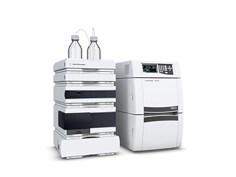
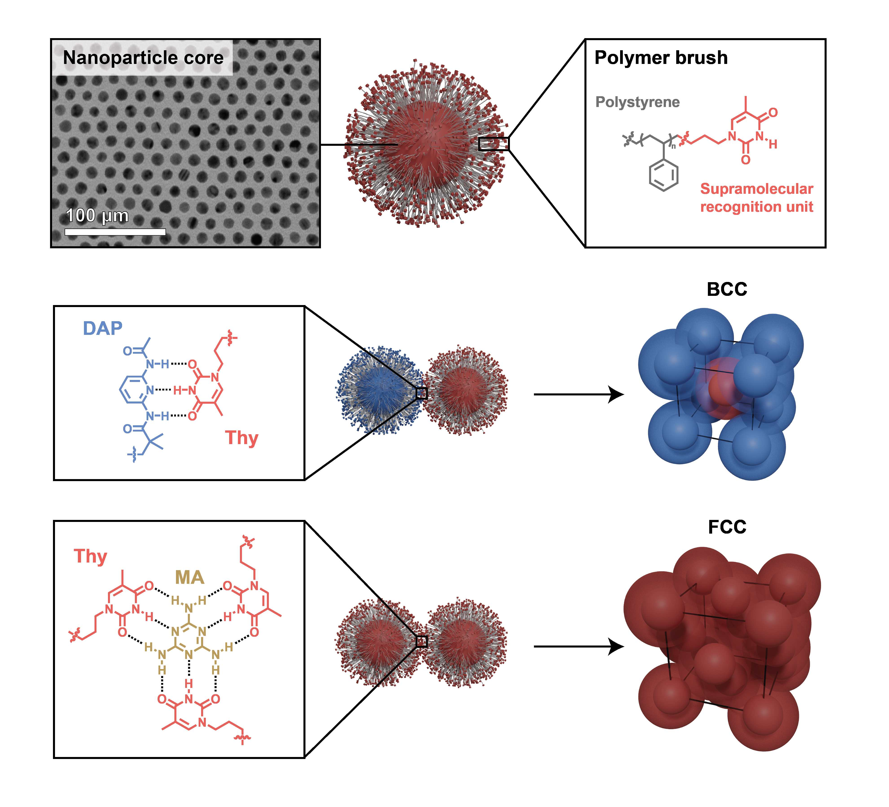

Fiber Drawing Tower

The Bioelectronics Group maintains a variety of specialized instruments for nanomaterial synthesis, device fabrication, and characterization. To support MIT colleagues, we offer use of select resources on a case-by-case basis. Inquiries can be sent to the corresponding lab member listed for each instrument below.

The Bioelectronics Group uses a custom fiber drawing tower for the thermal drawing of multifunctional polymer fibers. This process allows the integration of multiple functional materials — including conductors, semiconductors, and insulators — into a single flexible fiber with microscale cross-sectional features. These fibers are used as neural probes for optical, electrical, and chemical interrogation of the nervous system.

The group operates custom alternating magnetic field (AMF) systems for in vitro and in vivo magnetothermal stimulation experiments. These systems generate the oscillating magnetic fields required to activate magnetic nanotransducers implanted in biological tissue, enabling wireless neuromodulation without surgery or genetic modification.